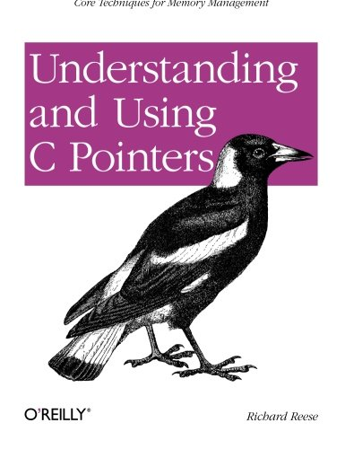
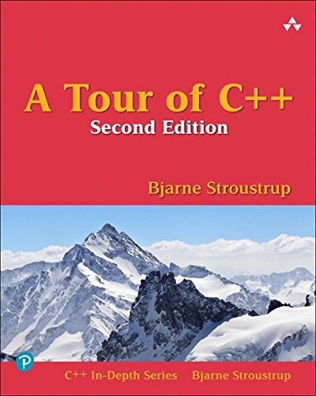
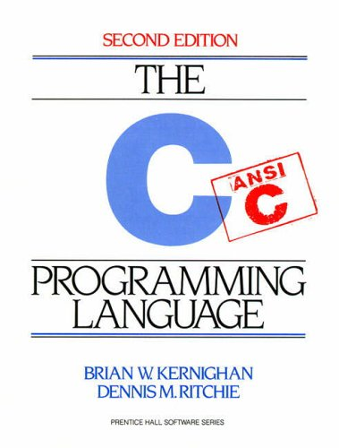
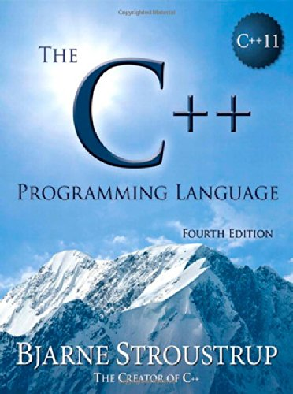

name: title background-image: url(../template/images/Title16x9.jpg) class: title-slide count: false # Systems Programming ## Lecture 1 .smaller[| 24.smaller[th] of September 2018] ### Michel Steuwer .smaller[| [http://michel.steuwer.info](http://michel.steuwer.info/) | [michel.steuwer@glasgow.ac.uk](mailto:michel.steuwer@glasgow.ac.uk)] --- # Systems Programming (H) - Lecturer: - **Michel Steuwer** | [http://michel.steuwer.info](http://michel.steuwer.info/) - Room [**M111**](http://michel.steuwer.info/contact) in the School of Computing Science - Email: [michel.steuwer@glasgow.ac.uk](mailto:michel.steuwer@glasgow.ac.uk) <div style="width: 150px; position: absolute; top: 150px; left: 800px"> </div> - Lab assistants: - Person 1 - Person 2 - Schedule: - Two-hour lecture each week: **Monday 10 - 12** - Labs: **Monday** --- # Learning outcomes - Systems Programming (H) 1. Demonstrate competence in **low-level systems programming** 1. **Design, implement and explain the behaviour** of low-level programs written in a systems language 1. Explain the concepts of **stack and heap allocation**, **pointers**, and **memory ownership**, including demonstrating an understanding of issues such as **memory leaks**, **buffer overflows**, **use-after-free**, and **race conditions** 1. Explain how **data structures are represented**, and how this interacts with caching and virtual memory, and to be able to demonstrate the performance impact of such issues 1. Discuss and reason about **concurrency**, **race conditions**, and the **system memory model** 1. **Build** well-structured **concurrent systems programs** of moderate size, using libraries and static analysis tools appropriately. - In this course we will use `C` and `C++` as they are the two most important systems programming languages --- # Reading material - No book required for this course (programming by yourself is _the key_ to understanding) - Two introductory recommendations (left) and the two definet treatments of C and C++ (right): <div style="text-align: center"> <div style="width: 25%; float: left;"> <br/> <span style="font-size: 90%">Focus on most<br/> challenging part of C:<br/> memory management</span> </div> <div style="width: 25%; float: left;"> <br/> <span style="font-size: 90%">Good overview of the most important features of C++<br/> Also available for free at <a href="https://isocpp.org/tour">isocpp.org/tour</a></span> </div> <div style="width: 25%; float: left;"> <br/> <span style="font-size: 90%">Reference by creators of C<br/> Still good reference today</span> </div> <div style="width: 25%; float: left;"> <br/> <span style="font-size: 90%">In-depth (1376 pages) treatment of C++ by the creator of the language</span> </div> <div style="clear: both;"></div> </div> --- # Course methodology - This course is new, replacing the prior _Advanced Programming_ course - I not only want to change the content, but also _how_ the course is delivered - I find teaching programming without actively programming silly! - Emphasis on **_live coding_** in the lectures instead of reading slides - This is much better with plenty of student interactions, so **ask questions!**<br/> We will find the answer together by trying it out and writing programs --- # Your Feedback and Questions - Your feedback is important! It will change the material of the course and the way it is delivered - You can use [Padlet](https://padlet.com/michel_steuwer/questions) to post questions during the lecture - Use the forum on the course  page to ask questions inbetween lectures - Email me _only_ with personal matters --- # What languages do you speak? - Answer at: http://bit.do/GlasgowSP_Languages <iframe src="https://docs.google.com/forms/d/e/1FAIpQLScjEcPIzCataqAvJcLOHajnaD34WSwH__iyJu-CAWk2ydOZ_Q/viewform?embedded=true" width="1000" height="425" frameborder="0" marginheight="0" marginwidth="0">Loading...</iframe> --- # What is *Systems Programming*? --- # History of Systems Programming Languages - 1 **until the 1970s**: System software is written in processor specific assembly languages **1970s**: _Dennis Ritchie_ and _Ken Thompson_ wanted to port UNIX from the `PDP-7` to the `PDP-11` .center[ They looked for a portable programming language and tried a language called `B` but then<br/> invented `C` as an _imperative_ language supporting _structured_ programming ] <div style="text-align: center"> <div style="width: 45%; float: left;"> <img src="images/PDP-7.jpeg" width="70%"/><br/> <span style="font-size: 90%">PDP-7 minicomputer</span> </div> <div style="width: 45%; float: left;"> <img src="images/Ken_Thompson_(sitting)_and_Dennis_Ritchie_at_PDP-11.jpg" width="70%"/><br/> <span style="font-size: 90%">Ken Thompson (sitting) and Dennis Ritchie (standing) at a PDP-11 minicomputer <span style="font-size: 60%">(Picture by <a hre="https://en.wikipedia.org/wiki/File:Ken_Thompson_(sitting)_and_Dennis_Ritchie_at_PDP-11_(2876612463).jpg">Peter Hamer</a>)</span> </span> </div> <div style="clear: both;"></div> </div> --- # History of Systems Programming Languages - 2 **1980s**: _Bjarne Stroustrup_ aims to enrich `C` with new abstraction mechanisms and creates `C++` <br/> A major influence is the first _object-oriented_ programming language `Simula` <div style="text-align: center"> <img src="images/BjarneStroustrup.jpg" width="30%"/><br/> <span style="font-size: 90%">Bjarne Stroustrup, the creator of C++</span> </div> **2010s**: New systems programming languages appear. `Rust` (2010) and `Swift` (2014) are sucessfull examples which include many _functional_ programming language features --- # Programming Paradigms - In _imperative_ programming computations are sequences of statements that change the program's state ```python x = 41 x = x + 1 ``` - _Structured_ programming organises programs with subroutines and structured control flow constructes ```python sum = 0 for x in array: sum += x ``` - _Object-oriented_ programming organises programs into objects which contain data and encapsulate behaviour ```python animal = Dog() animal.makeNoice() ``` - In _functional_ programming programs are mathematical functions and avoid explicit change of state ```python fib = lambda x, x_1=1, x_2=0: x_2 if x == 0 else fib(x-1, x_1 + x_2, x_1) ``` --- # Some questions about a simple Python program ```python x = 41 x = x + 1 ``` - What value does `x` has at the end of the program execution? (not a tricky question) -- - Answer: `42` - How much memory does Python take to store `x`? (much more tricky question) -- - Answer: In depends on the Pythton implementation.<br/> `sys.getsizeof(x)` gives the answer. On my machine: 24 bytes (= 24 * 8 = 192 bits)<br/> We can see the defining C code [here](https://github.com/python/cpython/blob/master/Include/longintrepr.h#L70) - How many instructions does Python execute to compute `x + 1`? (even more tricky question) -- - Answer: I don't know, but many more than just the addition ...<br/> Python is a dynamically typed language, so the data type of `x` could change at any time.<br/> Every operation, therefore, tests the data types of the operants to check which instruction to execute --- # Some questions about a simple C program ```C #include <stdio.h> int main() { int x = 41; x = x + 1; println("%d\n", x); } ``` - What value does x has at the end of the program execution? (not a tricky question) - Answer: 42 - How much memory does C take to store `x`? (not that tricky any more) - Answer: `sizeof(int)` usually 4 bytes (= 4 * 8 = 32 bits) - How many instructions does C take to compute `x + 1`? (not that tricky any more) - Answer: 1 `add` instruction .center[This level of control allows strong reasoning about the programs performance and execution behaviour] --- name: closing background-image: url(../template/images/Closing16x9.jpg) class: title-slide, text-white count: false # Systems Programming ## Lecture 1 .smaller[| 24.smaller[th] of September 2018] ### Michel Steuwer .smaller[| [http://michel.steuwer.info](http://michel.steuwer.info/) | [michel.steuwer@glasgow.ac.uk](mailto:michel.steuwer@glasgow.ac.uk)]